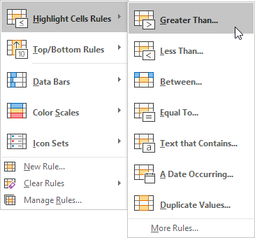
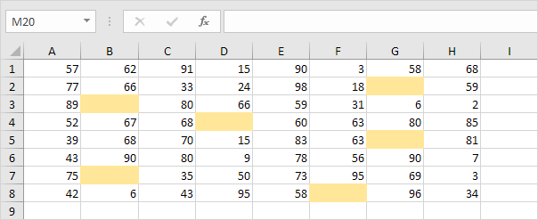

Conditional Formatting
Highlight Cells Rules | Clear Rules | Top/Bottom | Conditional Formatting with Formulas | Color Scales | Highlight Blank Cells
Use conditional formatting in Excel to automatically highlight cells based on their content. Apply a rule or use a formula to determine which cells to format.
Highlight Cells Rules
To highlight cells that are greater than a value, execute the following steps.
1. Select the range A1:A10.

2. On the Home tab, in the Styles group, click Conditional Formatting.

3. Click Highlight Cells Rules, Greater Than.

4. Enter the value 80 and select a formatting style.

5. Click OK.
Result. Excel highlights the cells that are greater than 80.

6. Change the value of cell A1 to 81.
Result. Excel changes the format of cell A1 automatically.

Note: you can also use this category (see step 3) to highlight cells that are less than a value, between two values, equal to a value, cells that contain specific text, dates (today, last week, next month, etc.), duplicates or unique values.
Clear Rules
To clear a conditional formatting rule, execute the following steps.
1. Select the range A1:A10.

2. On the Home tab, in the Styles group, click Conditional Formatting.
3. Click Clear Rules, Clear Rules from Selected Cells.

Top/Bottom
To highlight cells that are above average, execute the following steps.
1. Select the range A1:A10.

2. On the Home tab, in the Styles group, click Conditional Formatting.
3. Click Top/Bottom Rules, Above Average.

4. Select a formatting style.

5. Click OK.
Result. Excel calculates the average (42.5) and formats the cells that are above this average.

Note: you can also use this category (see step 3) to highlight the top n items, the top n percent, the bottom n items, the bottom n percent or cells that are below average.
Conditional Formatting with Formulas
Take your Excel skills to the next level and use a formula to determine which cells to format. Formulas that apply conditional formatting must evaluate to TRUE or FALSE.
1. Select the range A1:E5.

2. On the Home tab, in the Styles group, click Conditional Formatting.
3. Click New Rule.

4. Select 'Use a formula to determine which cells to format'.
5. Enter the formula =ISODD(A1)
6. Select a formatting style and click OK.

Result. Excel highlights all odd numbers.

Explanation: always write the formula for the upper-left cell in the selected range. Excel automatically copies the formula to the other cells. Thus, cell A2 contains the formula =ISODD(A2), cell A3 contains the formula =ISODD(A3), etc.
Here's another example.
7. Select the range A2:D7.

8. Repeat steps 2-4 above.
9. Enter the formula =$C2="USA"
10. Select a formatting style and click OK.

Result. Excel highlights all USA orders.

Explanation: we locked the reference to column C by placing a $ symbol in front of the column letter ($C2). As a result, cell B2, C2 and cell D2 also contain the formula =$C2="USA", cell A3, B3, C3 and D3 contain the formula =$C3="USA", etc.
Color Scales
Use awesome color scales to assign different colors to different values. This allows you to quickly identify high and low points in your dataset.

Tip: learn more about color scales and learn how to create this heat map.
Highlight Blank Cells
You can also use conditional formatting in Excel to format blank cells. This is useful for ensuring data completeness and quickly shows where information is missing.

Tip: learn how to highlight blank cells on our page about blanks.